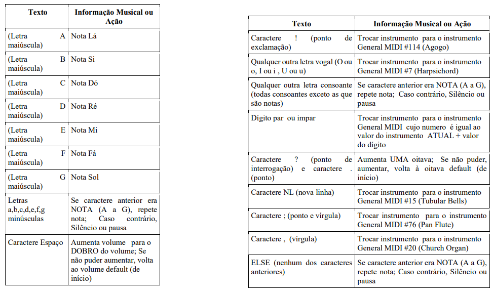
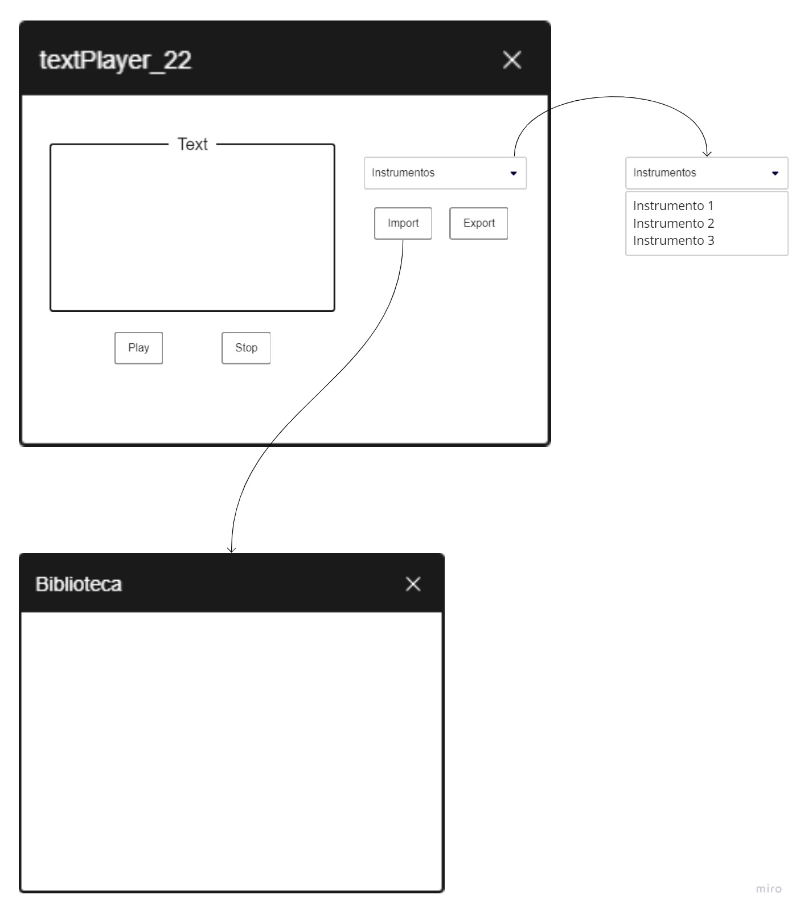
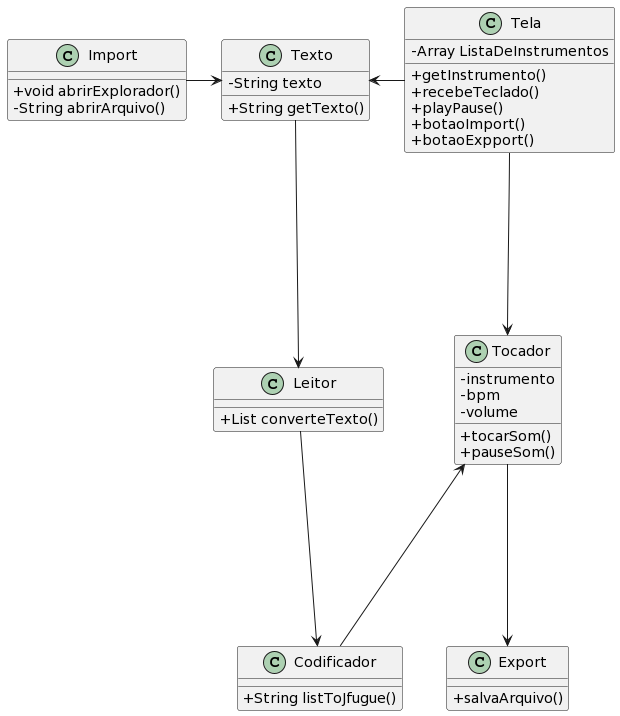

class: center, middle # Técnicas de Construção de Programas ### Trabalho Final - Sintetizador de String Alunos: Andrei R. Bereta, Felipe S. Bertoglio, Kathleen L. F. Hoff, Matheus de M. Costa 2022/1 --- # Sumário 1. Requisitos 2. Projeto 3. Implementação 4. Verificação 5. Evolução --- # Requisitos A fim de concluir os estudos sobre Técnicas de Construção do Programas, os professores propuseram o desenvolvimento de um sintetizador de strings que tem como principal tarefa receber uma string e a traduzir em sons previamente padronizados. Os requisitos necessários para a conclusão do projeto eram: - Escolha e desenvolvimento de alguma linguagem de programação orientada a objeto; - Entrada de string pelo teclado ou carregamento de txt; - Tradução da string em som; - Possibilidade de exportação de um arquivo MIDI; - Seguir os seguintes parâmetros: --- <br> <br> <br>  --- # Projeto Escolhemos utilizar a linguagem Java aliada às seguintes bibliotecas: - JFugue: Capaz de traduzir strings em sons; - Componentes de javax.swing: Usadas para criação da tela criada para o usuário. Exemplo: javax.swing.JTextArea, utilizada para a criação da caixa de texto. As funcionalidades que inserimos no trabalho foram: - Tradução de textos (tipo string) em som; - Possibilidade de dar play e stop no som; - Importar arquivos com a extensão .txt que contenham um texto a ser traduzido; - Exportar o som, salvando-o em um arquivo na biblioteca do usuário; - Mudança de instrumento base, através da seleção de um instrumento no menu; --- O protótipo da Tela de visualização proposto foi:  --- Também foi desenvolvida a seguinte UML: --- # Implementação --- # Verificação --- # Evolução No início do projeto, não tinhamos compreendido totalmente como a biblioteca JFugue funcionava. Logo para a primeira parte do projeto entregamos a seguinte UML:  Como podemos observar, comparando a imagem anterior com a UML final, mudamos alguns atributos, métodos e classes. --- # Evolução Modificações futuras dependeriam das novas necessidades do usuário|cliente. Porém, acreditamos que os requisitos propostos pelo professor foram devidamente seguidos.